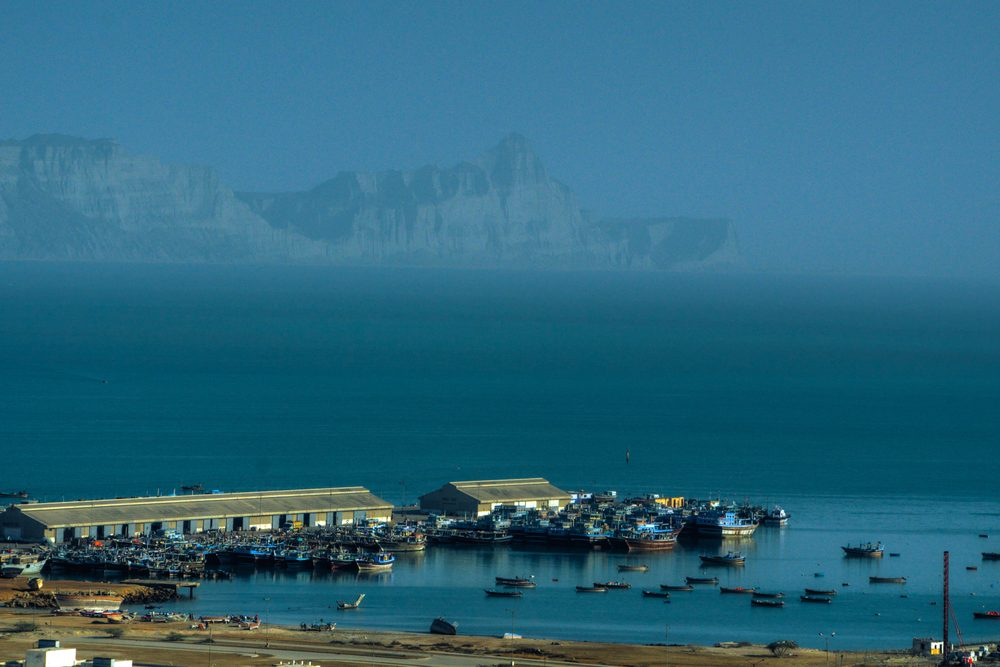

A fish is at its most valuable the moment it leaves the water — and it has been losing value every hour since. For the small boats that land most of the world's catch, the journey back to port is where that value quietly disappears. The fish still sells; it just sells for less. Multiply that across a fleet, a season, and a national economy, and the at-sea cold chain turns out to be one of the highest-return, least-glamorous investments in the entire seafood system. This is the case for it — and why solar-assisted, on-board cold storage is the form it increasingly takes.
The loss nobody invoices
Post-harvest fish loss is large and largely invisible. The FAO estimates that in developing-country small-scale fisheries, losses range from 20% up to 75% of the catch, depending on the fishery and where in the supply chain you measure (FAO, Post-harvest losses in small-scale fisheries, 2011). Globally, post-harvest fish losses run to roughly 10–12 million tonnes a year — about 10% of total production (Abelti et al., Aquaculture, Fish and Fisheries, 2024).
But the most important finding for anyone designing a cold chain is this: in FAO field assessments of small-scale fisheries, quality losses — downgrading — accounted for more than 70% of total loss, while outright physical loss seldom exceeded 5% (FAO, 2011). The fish is not thrown overboard. It arrives at market. It just arrives as second grade, or as fishmeal, instead of the export-fresh product it could have been. That gap between what the catch could sell for and what it does sell for is the loss — and it never appears on an invoice.
In Pakistan, measured estimates cluster around 15–20% post-harvest loss, attributed to poor handling, inadequate cold storage, and outdated processing (Pakistan trade press, 2026), while some sector experts cite far higher quality-loss figures. Either way, the lever is the same: keep the fish cold, and keep its grade.
What actually happens to a warm fish
Fish spoil faster than almost any other animal protein, and three mechanisms run at once the moment the catch is on deck (FAO Fisheries Technical Paper No. 348, Quality and Changes in Fresh Fish, Huss, 1995):
- Autolysis — the fish's own enzymes digest its tissue from the inside. Gut enzymes attack the body wall, producing softening and the "belly burst" that ruins whole-fish presentation.
- Bacterial spoilage — once tissue softens, spoilage bacteria multiply, breaking proteins into amines and off-odours until the fish is unfit to eat.
- Histamine formation — in the mackerel, sardine, and tuna that dominate the Arabian Sea catch, bacteria convert histidine into histamine, a heat-stable toxin that causes scombroid poisoning and cannot be cooked out. FAO warns that un-iced fish held at ambient for just 13–19 hours may already be spoiled or a public-health hazard (FAO, 2011).
There is also a texture trap. If a fish enters rigor mortis while still warm — above roughly 17°C — the violent muscle contraction tears connective tissue and causes "gaping", where the fillet flakes apart and loses all visual appeal (FAO TP 348, 1995). These are precisely the defects a buyer downgrades on: soft belly, dull eye, gaping flesh. Each is a direct, physical consequence of the fish being too warm for too long.
Why 0°C is the number that decides the price
Spoilage is a chemical and biological process, and like all such processes it slows dramatically as temperature falls. The FAO uses melting ice (0°C) as its shelf-life baseline, and the relationship is stark (FAO TP 348, Huss, 1995):
- Fish that keep about 14 days at 0°C last only around 7 days at 5°C, and roughly 1.5 days at 15°C.
- At tropical ambient — and Arabian Sea surface and deck temperatures off Karachi routinely sit near 27–30°C — fish can become unfit within hours.
- At 0°C, the key spoilage bacterium grows at less than one-tenth of its optimum rate.
The practical conclusion is simple to state: get the catch as close to 0°C as possible, as fast as possible after capture, and hold it there until it lands. The faster the pull-down from catch temperature, the more shelf life — and grade — survives the trip. Every hour the core of the fish stays warm consumes that shelf life disproportionately.
Why ice — the default everywhere — runs out
Most small boats, in Pakistan and across the developing world, preserve their catch with crushed or block ice loaded from shore. Pakistan's marine fleet is overwhelmingly small-scale — on the order of 14,000 boats in Sindh and around 5,000 in Balochistan, the great majority artisanal vessels (Express Tribune / provincial fisheries data, 2023) — and ice is the near-universal method.
Ice is cheap, it holds a steady 0°C, and as it melts it even washes surface bacteria away. But ice has one fatal property: it is consumed. It melts, it drains, and it must be replenished — daily, or every few days, depending on how well the hold is insulated and how often it is opened. On a long or hot trip, the ice runs out before the boat returns, and the catch — often the first fish caught, sitting at the bottom — warms back up and slides down a grade. Compounding the problem, small open boats have no electrical power at sea for mechanical refrigeration, and a diesel generator running a chiller burns fuel the economics rarely justify.
This is the structural gap: ice runs out, and the obvious alternative — engine-run refrigeration — is too expensive and too fragile for a small boat 40 km offshore.

The idea: bank the cold at the dock, run on the sun at sea
The approach that closes that gap turns the problem around. Instead of carrying a melting consumable, the boat carries a cold store that is charged at the dock and discharged slowly at sea — a kind of thermal battery for cold.
Conceptually it works in three moves. First, sealed eutectic cold plates inside heavily insulated fish tanks are frozen hard overnight at the dock, using cheap shore power — banking a large reserve of cold. Second, at sea those plates hold the catch near chill temperature passively, with no continuous power needed, because the cold is already stored in them. Third, rooftop solar tops up the cold through the day as the sun climbs, removing the need for a diesel generator and the fuel bill that comes with it. The FAO has highlighted exactly this principle, noting that a eutectic store can hold solar-generated cold for later release and that lack of reliable electricity is a critical barrier for artisanal fishing communities (FAO, New guide explores solar cold chain solutions for small-scale fisheries, 2023).
The appeal is that it attacks both reasons ice fails at once: the stored cold does not run out the way ice does, and solar replaces the diesel that made engine-run refrigeration uneconomic. The boat leaves the dock cold and comes home cold, running its cold chain largely on sunshine. We have engineered exactly this for Pakistani vessels — described, without the proprietary engineering, on our marine & boat cold storage page.
The prize: grade, exports, and income
Pakistan exported USD 489.2 million of seafood on 242,484 tonnes in FY2024-25, up more than 20% in value year-on-year (Pakistan trade press, 2025). Yet the single largest export category by volume was fishmeal — roughly 79,090 tonnes worth USD 160 million: the low-grade output that warm, spoiled, or downgraded catch ends up as. High-value shrimp, by contrast, earns on the order of ten times more per tonne. Every fish that spoils on the way home slides down that price ladder.
The quality barrier is not abstract. In 2007 the European Union banned Pakistani seafood imports, citing a deficient production cold chain, a lack of traceability, and unhygienic conditions on fishing vessels — and the ban cost Pakistan its top market, worth around USD 50 million a year (UNIDO; SeafoodSource). A functioning HACCP system, with cold-chain control documented from the vessel onward, is mandatory for EU access. The logic of the upside is therefore direct: a better at-sea cold chain means fewer histamine and quality rejections, more catch qualifying as export-fresh or frozen rather than fishmeal, higher unit prices, and access to premium markets a warm-hold fleet simply cannot reach.
Less waste is also less pressure on the sea
There is a sustainability dividend on top of the commercial one. Reducing post-harvest loss means more usable protein from the same catch — and less pressure to over-fish to meet demand. That matters acutely in Pakistan, where provincial fisheries officials have reported that 80–90% of marine life along the Sindh coast has been depleted by overfishing and pollution (Express Tribune / provincial data, 2023). On the energy side, replacing a diesel refrigeration genset with solar cuts carbon directly: on-board diesel CO₂ is proportional to fuel burned, and documented solar-cooling projects elsewhere have saved thousands of litres of fuel and tens of tonnes of CO₂ in their first year alone (IPNLF, 2023).
The bottom line
The at-sea cold chain is the cheapest quality upgrade a fishing boat can make, because it works on the part of the value chain where the most value is being destroyed — silently, every trip, in the gap between the water and the wharf. The science is settled: hold the catch near 0°C, fast, and grade survives. The economics are settled too: graded fish is worth multiples of fishmeal, and premium export markets are gated on a provable cold chain. What has changed is that the technology to do this on a small boat — stored cold charged at the dock, maintained by solar at sea — is now practical, marine-hardened, and affordable.
Izhar Foster has engineered cold for Pakistan since 1959 — cold stores, refrigeration plants, and insulated structures across the country. We have taken that same engineering to sea. If you operate a fishing vessel — or a fleet — and want the catch to come home worth what it was worth in the water, our on-board marine cold storage is built for exactly that. For boat owners, our shorter guide on why melting ice quietly costs you money is the place to start.
Sources: FAO Fisheries Technical Paper No. 348, Quality and Changes in Fresh Fish (Huss, 1995); FAO, Post-harvest losses in small-scale fisheries (2011); FAO, New guide explores solar cold chain solutions for small-scale fisheries (2023); Abelti et al., Aquaculture, Fish and Fisheries (2024); UNIDO and SeafoodSource on the 2007 EU import ban; Pakistan seafood-export trade reporting (2024–2025); provincial fisheries data, Sindh and Balochistan (2023); IPNLF solar ice-maker field results (2023). Figures are quoted as reported by these sources; some economic ratios are derived arithmetically from the cited absolute figures.